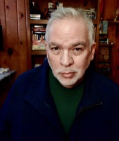

Moderators
People who moderated panels and post-screening conversations. 91 people, most editions first.
Filmmakers 284Moderators 91Panelists & speakers 686Workshop leaders 72Journalists behind the films 4Film subjects 57Honorees 1Festival team 116




 Natalie Bullock BrownPanelist, moderator · 6 editions, 2019–2026Documentary Accountability Working Group
Natalie Bullock BrownPanelist, moderator · 6 editions, 2019–2026Documentary Accountability Working Group
 Amanda PikePanelist, filmmaker, moderator · 6 editions, 2019–2025The Center for Investigative Reporting
Amanda PikePanelist, filmmaker, moderator · 6 editions, 2019–2025The Center for Investigative Reporting Katie TownsendPanelist, workshop leader, moderator · 6 editions, 2015–2023Reporters Committee for Freedom of the Press
Katie TownsendPanelist, workshop leader, moderator · 6 editions, 2015–2023Reporters Committee for Freedom of the Press Harlo HolmesWorkshop leader, panelist, moderator · 5 editions, 2015–2026Freedom of the Press Foundation
Harlo HolmesWorkshop leader, panelist, moderator · 5 editions, 2015–2026Freedom of the Press Foundation
- Will JenkinsModerator · 4 editions, 2015–2019
 Lauren PabstPanelist, moderator · 4 editions, 2019–2025The John D. and Catherine T. MacArthur Foundation
Lauren PabstPanelist, moderator · 4 editions, 2019–2025The John D. and Catherine T. MacArthur Foundation
 Simon KilmurryModerator, panelist, filmmaker · 3 editions, 2016–2025International Documentary Association
Simon KilmurryModerator, panelist, filmmaker · 3 editions, 2016–2025International Documentary Association Sig LibowitzModerator, panelist, workshop leader · 3 editions, 2024–2026JHU AAP Graduate Film and Media Program
Sig LibowitzModerator, panelist, workshop leader · 3 editions, 2024–2026JHU AAP Graduate Film and Media Program Malkia LydiaModerator, panelist · 3 editions, 2024–2026
Malkia LydiaModerator, panelist · 3 editions, 2024–2026 Eric MatthiesFilmmaker, moderator, panelist · 3 editions, 2017–2021
Eric MatthiesFilmmaker, moderator, panelist · 3 editions, 2017–2021 Michael RezendesPanelist, moderator, workshop leader · 3 editions, 2015–2023
Michael RezendesPanelist, moderator, workshop leader · 3 editions, 2015–2023
 Elliot AckermanModerator · 2 editions, 2022–2023
Elliot AckermanModerator · 2 editions, 2022–2023- Laura BlumenfeldModerator · 2 editions, 2018–2024
- Caty Borum ChattooModerator, panelist · 2 editions, 2015–2017School of Communication, American University


 Lana GarlandFestival team, moderator · 2 editions, 2023–2024
Lana GarlandFestival team, moderator · 2 editions, 2023–2024 Ronnie GreeneModerator · 2 editions, 2024–2025
Ronnie GreeneModerator · 2 editions, 2024–2025- Judith HelfandPanelist, workshop leader, festival team · 2 editions, 2021–2022Chicken & Egg Pictures
- Brent Lambert-ZaffinoModerator, festival team · 2 editions, 2023–2024
 Nicki MayoModerator, panelist · 2 editions, 2023–2024
Nicki MayoModerator, panelist · 2 editions, 2023–2024

 Lynne AdrineModerator · 2024
Lynne AdrineModerator · 2024
- Lisa ArmstrongModerator · 2016
 Wonjung BaeModerator · 2025
Wonjung BaeModerator · 2025
- Marcia DavisModerator, panelist · 2018
 Benjamin DuchekModerator · 2025
Benjamin DuchekModerator · 2025 Robin GivhanModerator · 2025
Robin GivhanModerator · 2025 David E. GuggenheimModerator · 2025
David E. GuggenheimModerator · 2025- Dana HedgpethModerator · 2024
- David HerszenhornModerator · 2023


 Tracy JanModerator · 2023
Tracy JanModerator · 2023

 Dan MericaModerator · 2024
Dan MericaModerator · 2024- James MillwardModerator · 2023
 Candace MontagueModerator · 2025
Candace MontagueModerator · 2025- Tom MuellerModerator · 2019
- Ellen NakashimaModerator · 2025
 Kelsey Nicole NelsonModerator · 2025
Kelsey Nicole NelsonModerator · 2025- Kasha PatelModerator · 2022
 Charles PoeModerator · 2025
Charles PoeModerator · 2025 Amy SchwartzModerator · 2024
Amy SchwartzModerator · 2024 Ian ShapiraModerator · 2025
Ian ShapiraModerator · 2025
- David SimonModerator · 2015
- Amy YoungFestival team, moderator · 2025